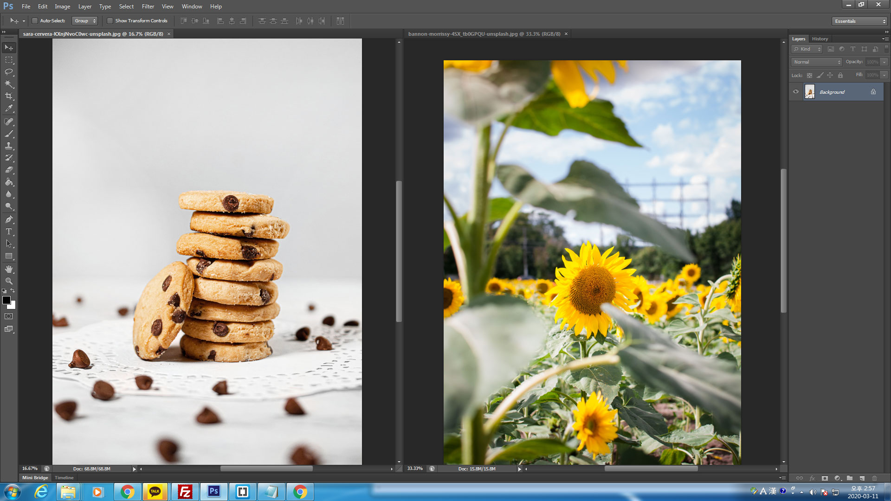
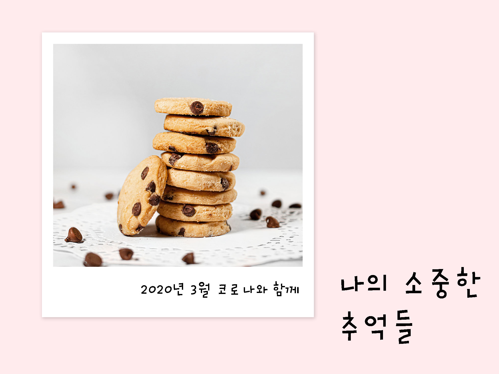
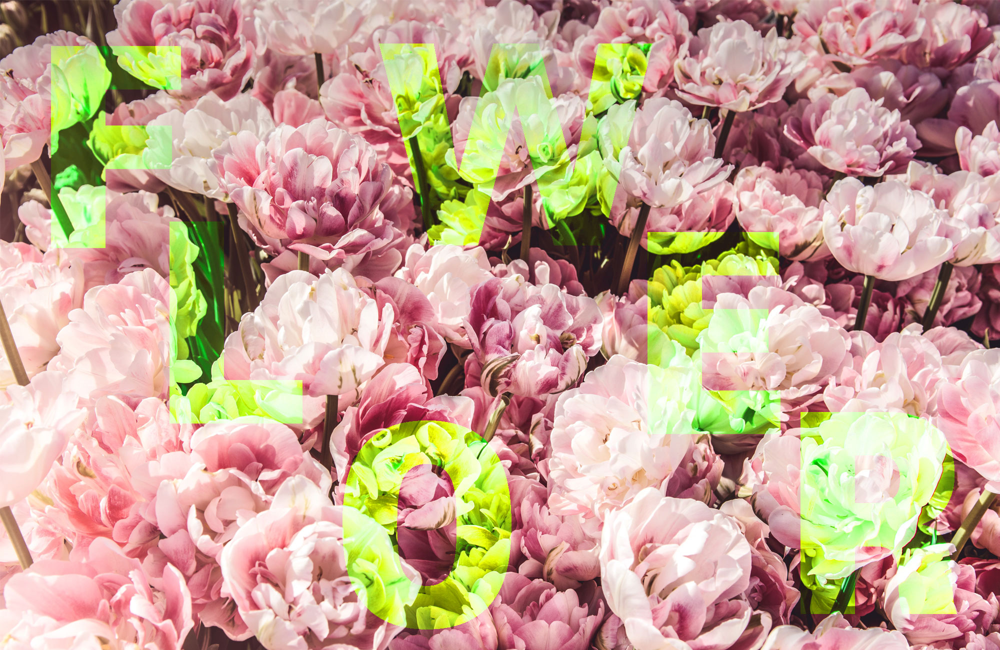
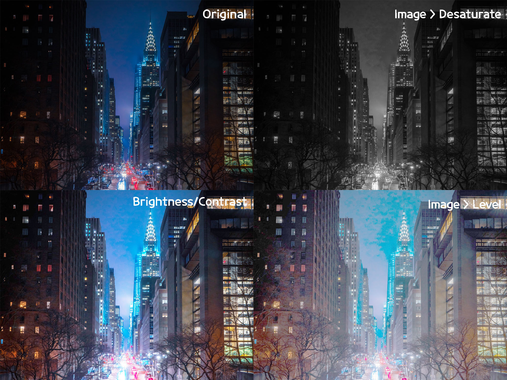
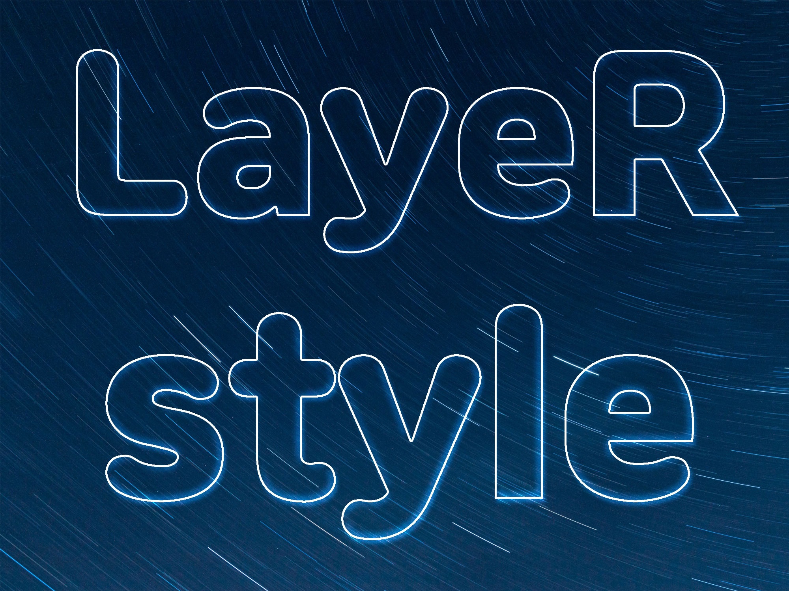
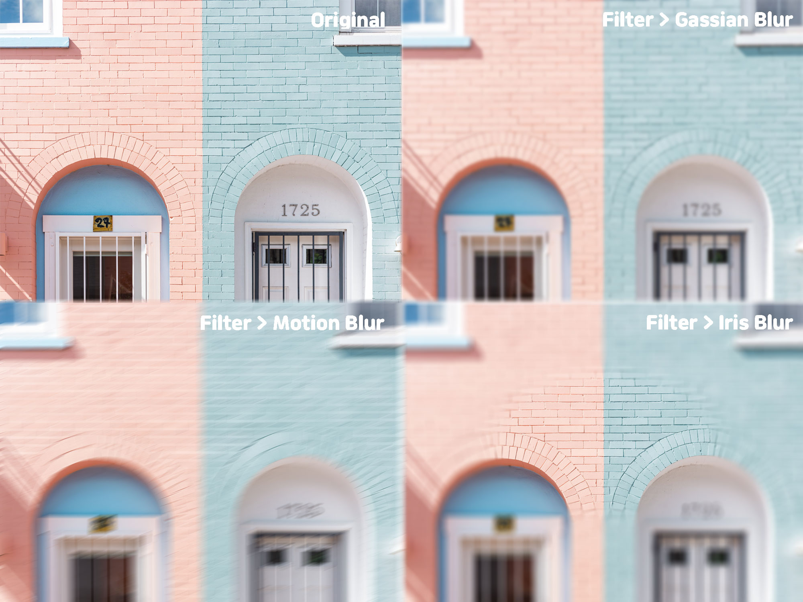
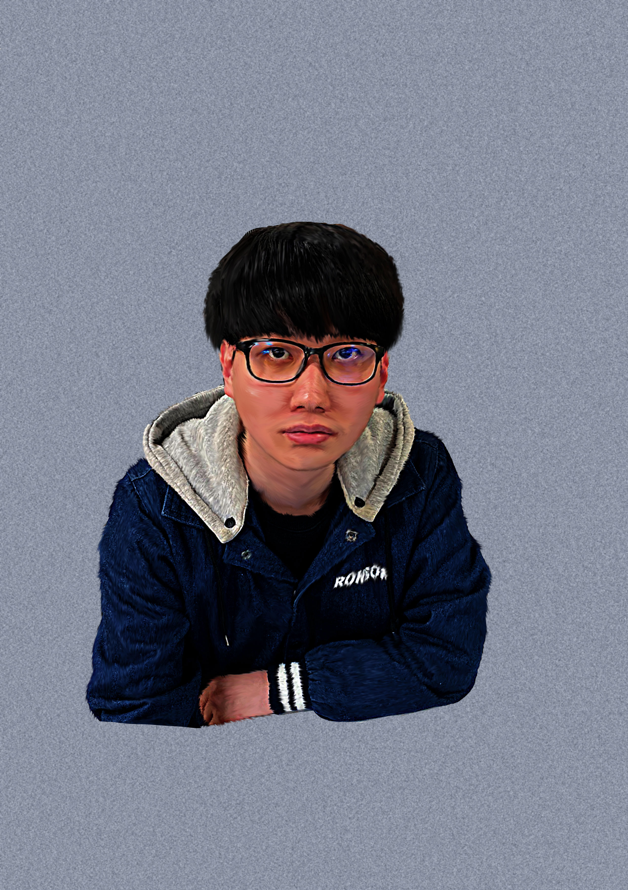
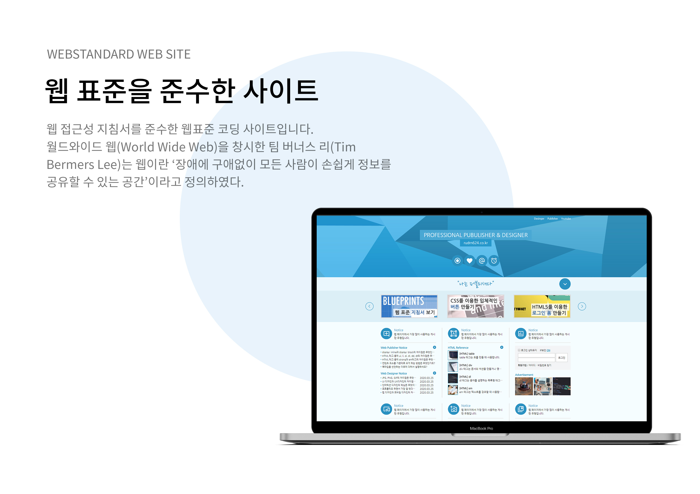
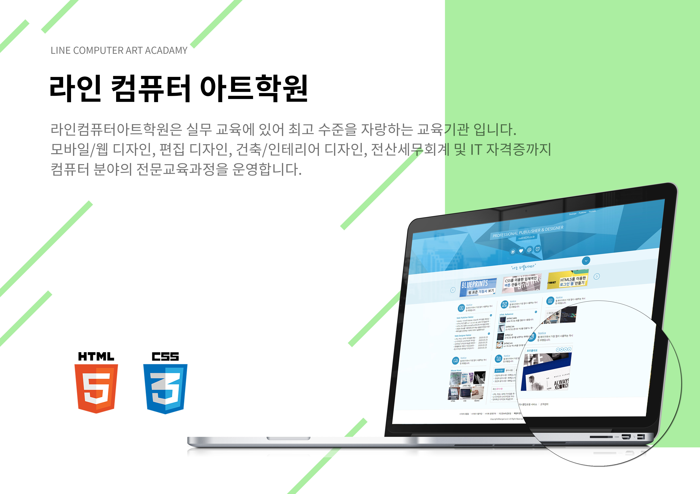

포토샵 단축키(Photoshop Cheetsheet)
- 새 파일 만들기 : Ctrl + N
- 레이어 패널 : F7
- 작업 취소하기 : Ctrl + Z
- 이미지 불러오기 : Ctrl + O
- 100% 비율로 조정하기 : Ctrl + 1
- 화면 확대하기 : Ctrl + +
- 화면 축소하기 : Ctrl + -
- 화면 이동하기 : space바 + 마우스
- 환경설정 : Ctrl + K
- 크기 변경하기 : Ctrl + t
- 전경색 바꾸기 : Alt + DEL
Photoshop 기능 설명
Photoshop 기능
- 작업창 정렬
- 효율성 검사
두개의 작업창을 구분하여 정렬해주는 기능
방법 : [Window] -> [Arrange] -> [3-up Vertical]
f8(info) -> 오른쪽 상단 위 패널옵션 클릭 -> Efficiency 체크 후 100% 확인
레이어 클리핑마스크 이용해서 앨범만들기
- 레이어 클리핑마스크
클리핑할 사진과 레이어 사이에 Alt + 클릭
레이어창 왼쪽 하단 fx눌러서 효과주기
레이어마스크를 이용해서 만들기
레이어마스크 만들기
- 레이어마스크를 만들기위해 툴을 이용해서 영역을 선택해줍니다.
- 레이어패널 좌측하단 레이어마스크 만들기를 눌러줍니다.
- 효과를 주어 작업을 마무리 해줍니다.
이미지 효과 적용하기
- Desaturate 흑백으로 색상을 바꿉니다.
- Brightness/Contrast 밝기와 대비를 조절합니다.
- Level 밝기와 대비를 조절함
- Viblance / Saturation 채도를 조절합니다.
- Threshold 검은색으로 이상해짐
- Black & White 흑백으로 색상을 바꿉니다.
레이어 스타일
블러
- Gassian Blur : 평범한 블러
- Motion Blur : 속도감을 느낄수있는 블러
- Iris Blur : 지정된 부분을 제외하고 전체를 블러
포토샵 스머지툴(Smudge Tool)로 문지른 효과내기
스머지효과로 파스텔톤 느낌나게하기
목업(mock up) 디자인
목업 디자인
 